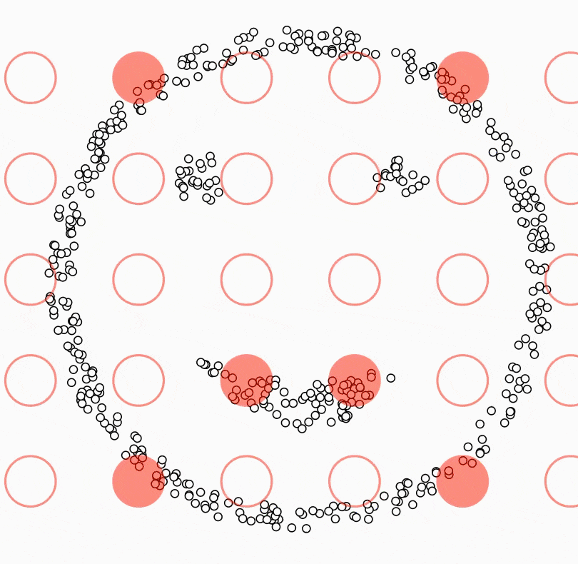

# Machine Learning

## Machine Learning - 非監督式學習 - DBSCAN - 監督式學習 - K-Nearest Neighbors - Linear Regression - 深度學習 - LeNet - Face Recognition
## 取得教學範例 - machine learning - https://reurl.cc/DyOQ2d - LeNet - https://reurl.cc/k1ojeb - face recognition - https://reurl.cc/d2aj36
## 今日檔案 - 請先下載這些檔案，並上傳到Colab - 連結：https://reurl.cc/x9Ny4b - `tutorial_latlon.csv` - `windy_power.csv`
# DBSCAN Density-based spatial clustering of applications with noise
## POI - Point Of Interesting - GPS- Global Positioning System - Geolocation: - 緯度 latitude - 經度 longitude - 資料都是從智慧型手機取得
<!-- .slide: data-background-color="#ffffff" data-background-iframe="media/map.html" -->
<!-- .slide: data-background="media/DBSCAN_principle.png" -->
## DBSCAN 
## DBSCAN  <font size=2 color="#33C7FF" style="position: absolute; top: 650px; left: 50px">https://ml-explained.com/blog/dbscan-explained</font>
## 觀察資料 ```python import pandas as pd import numpy as np from sklearn.cluster import DBSCAN import folium data = pd.read_csv("tutorial_latlon.csv") loc_center = [data['lat'].mean(), data['lon'].mean()] map_base = folium.Map(location = loc_center, tiles='Openstreetmap', zoom_start = 18, control_scale=True) for index, loc in data.iterrows(): folium.CircleMarker([loc['lat'], loc['lon']], radius=1, weight=5, color="black", popup=f"{loc['lat']},{loc['lon']}").add_to(map_base) map_base ```
<!-- .slide: data-background-color="#ffffff" data-background-iframe="media/map.html" -->
## 畫地圖 function ```python def draw_map(data): loc_center = [data['lat'].mean(), data['lon'].mean()] map_base = folium.Map(location = loc_center, tiles='Openstreetmap', zoom_start = 18, control_scale=True) for index, loc in data.iterrows(): folium.CircleMarker([loc['lat'], loc['lon']], radius=1, weight=5, color=loc['color'], popup=f"{loc['lat']},{loc['lon']}").add_to(map_base) return map_base ```
## 執行 DBSCAN ```python db = DBSCAN(eps=3e-5, min_samples=10).fit(data.values) data["label"] = db.labels_ data.label.unique() ``` ``` array([ 0, 1, 2, -1]) # 0, 1, 2 代表不同分群，-1 代表無法分群 ```
## 畫圖觀察分群 ```python color = ["red", "green", "blue", "black"] f = lambda x: color[int(x)] # 匿名函數 data["color"] = data.label.apply(f) map_dbscan = draw_map(data) map_dbscan ```
<!-- .slide: data-background-color="#ffffff" data-background-iframe="media/dbscan_map.html" -->
## 調整參數會如何？ 改變 `eps` ```python data = pd.read_csv("tutorial_latlon.csv") db = DBSCAN(eps=3e-4, min_samples=10).fit(data.values) data["label"] = db.labels_ color = ["red", "green", "blue", "black"] f = lambda x: color[int(x)] # 匿名函數 data["color"] = data.label.apply(f) map_dbscan = draw_map(data) map_dbscan ```
## 經緯度對應的距離 

# K-Nearest Neighbors
## K-Nearest Neighbors - 計算待測資料與其他資料點之間的距離 - 選擇與待測資料最近的 K 個資料點 - 投票：算出 K 個資料點中，哪個類別出現最多次，出現最多次的類別作為待測資料的類別  <font size=2 color="#33C7FF" style="position: absolute; top: 650px; left: 50px">https://medium.com/dropout-analytics/beginners-guide-to-knn-with-cuml-ddca099f9e9d</font>
## Iris  <font size=2 color="#33C7FF" style="position: absolute; top: 650px; left: 50px">http://mirlab.org/jang/books/dcpr/datasetiris.asp?title=2-2+iris+dataset&language=all</font>
## Iris  <font size=2 color="#33C7FF" style="position: absolute; top: 650px; left: 50px">https://www.embedded-robotics.com/iris-dataset-classification/</font>
## 讀取資料 ```python from sklearn.neighbors import KNeighborsClassifier import pandas as pd import numpy as np from sklearn import datasets from sklearn.model_selection import train_test_split import plotly.express as px iris = datasets.load_iris() iris ```
## 畫圖觀察 ```python data = pd.DataFrame(iris.data, columns=iris.feature_names) data["label"] = iris.target f = lambda x: iris.target_names[x] data["species"] = data.label.apply(f) px.scatter(data, "petal length (cm)", "petal width (cm)", color="species") px.scatter(data, "sepal length (cm)", "sepal width (cm)", color="species") ```
## 畫圖觀察 
## 畫圖觀察 
## 執行 KNN ```python # 分成 training 和 testing 資料 x_train, x_test, y_train, y_test = train_test_split(iris.data, iris.target, test_size=0.2, random_state=1) # 訓練 knn = KNeighborsClassifier(n_neighbors=3,p=2) knn.fit(x_train, y_train) # 預測 pred_test = knn.predict(x_test) pred_train = knn.predict(x_train) ```
## 觀察分類結果 觀察正確率 ```python knn.score(x_train, y_train) ``` ``` 0.95 ``` ```python knn.score(x_test, y_test) ``` ``` 1 ```
## 觀察分類結果 ```python [1-8|9-13|14-17|18-19] # 整理一下資料 data_knn = pd.DataFrame( np.append(x_train, x_test, axis=0), columns=iris.feature_names) data_knn['label'] = np.append(y_train, y_test, axis=0) data_knn['training'] = ["train"] * len(x_train) + ["test"] * len(x_test) data_knn["prediction"] = np.append(pred_train, pred_test, axis=0) # 把分類錯誤的結果標示為 Wrong f = lambda x: iris.target_names[x] data_knn["answer"] = data_knn.label.apply(f) data_knn.loc[data_knn["prediction"] - data_knn["label"] != 0, "answer"] = "Wrong" # 把真實類別與預測結果另外處理 data_knn["species"] = data_knn.label.apply(f) data_knn["prediction_species"] = data_knn.prediction.apply(f) px.scatter(data_knn, "petal length (cm)", "petal width (cm)", color="answer", hover_data=["species", "prediction_species"]) ```
## 觀察分類結果 
## 試著調整 K ```python [1-8 | 10-15 | 17] # K 從 1 試到 99 accuracy_train = [] accuracy_test = [] for k in range(1, 100): knn = KNeighborsClassifier(n_neighbors=k) knn.fit(x_train, y_train) accuracy_train.append(knn.score(x_train, y_train)) accuracy_test.append(knn.score(x_test, y_test)) # 整理結果 accuracy = pd.DataFrame(dict( k=list(range(1, 100)) * 2, accuracy=np.append(accuracy_train, accuracy_test), train=["train"] * 99 + ["test"] * 99 )) px.line(accuracy, x="k", y="accuracy", color="train", markers=True) ```
## 試著調整 K 
# Linear Regression
<!-- .slide: data-auto-animate --> ## 多少風力產生多少電力 
<!-- .slide: data-auto-animate --> ## 多少風力產生多少電力 
<!-- .slide: data-auto-animate --> ## 多少風力產生多少電力  - linear regression - $y = b + a \times x$
<!-- .slide: data-auto-animate --> ## 多少風力產生多少電力 - linear regression - $y = b + a \times x$ - y: 電力, x: 風速 - 求出 a 和 b- 斜率和截距
## 評估模型 - Loss function - 找到讓誤差最小的參數 - 最小平方法 - <font color="red">Gradient Descent</font> $$ Loss(a, b) = \sum _{i=1} ^n (Truth_i - y_i)^2 = \sum _{i=1} ^n (Truth_i - b + a \times x_i)^2 $$ $$ a^*, b^* = arg\ min\ Loss(a, b) $$
## Gradient Descent
<!-- .slide: data-background="media/gradient_1.png" -->
<!-- .slide: data-background="media/gradient_2.png" -->
<!-- .slide: data-background="media/gradient_3.png" -->
## 動手練習 ```python import pandas as pd from sklearn.model_selection import train_test_split from scipy.stats import linregress import plotly.express as px data = pd.read_csv("windy_power.csv") fig = px.scatter(data, "wind_speed", "power") fig.update_traces(mode='markers', marker_size=10) ``` 
## 動手練習 ```python x_train, x_test, y_train, y_test = train_test_split( data.wind_speed.values, data.power.values, test_size=0.2, random_state=0) lr = linregress(x_train, y_train) print(f"y = {lr.intercept} + {lr.slope} * x") print(f"R squre: {lr.rvalue ** 2}") ``` ``` y = -88525.52938319303 + 34285.52615057922 * x R squre: 0.7875220416551721 # 判定係數：表示產生電力的多寡有約78%受到風速快慢的直線關係影響 ```
## 動手練習 ```python def lr_plot(x, y, prediction): df = pd.DataFrame(dict(wind_speed=x, power=y, prediction=prediction)) fig = px.scatter(df, "wind_speed", "power") fig_p = px.line(df, "wind_speed", "prediction", color_discrete_sequence=['red'], markers=True) fig.add_trace(fig_p.data[0]) fig['data'][0]['showlegend']=True fig['data'][1]['showlegend']=True fig['data'][0]['name']='power' fig['data'][1]['name']='prediction' fig.update_traces(line_width=2, marker_size=10) fig.show() pred_train = lr_prediction(x_train, lr) lr_plot(x_train, y_train, pred_train) ``` 
## 動手練習 ```python pred_test = lr_prediction(x_test, lr) lr_plot(x_test, y_test, pred_test) ``` 
# LeNet
## LeNet - 讓電腦識字 - Deep Learning - Convolutional Neural Network, CNN - Mnist dataset: 手寫文字資料集，0~9 - 20000 筆資料，灰階圖形 - 28 * 28 * 1 pixels - Colab 內建資料
## LeNet  <font size=2 color="#33C7FF" style="position: absolute; top: 650px; left: 50px">https://gfycat.com/gifs/search/artificial+neural+networks</font>
## Mnist <img src=media/mnist.png width="80%"> <font size=2 color="#33C7FF" style="position: absolute; top: 650px; left: 50px">https://machinelearningmastery.com/how-to-develop-a-convolutional-neural-network-from-scratch-for-mnist-handwritten-digit-classification/</font>
## Mnist ```python import pandas as pd data = pd.read_csv("sample_data/mnist_train_small.csv", header=None) data ``` 
## Mnist ```python from PIL import Image import numpy as np from skimage import io import plotly.express as px x_train = data.values[:, 1:].reshape(20000, 28, 28) label = data.values[:, 0] def show_number(data): array = data.astype(np.uint8) img = Image.fromarray(array) img.save("output.png") img = io.imread('output.png') fig = px.imshow(img, color_continuous_scale='gray') fig.update_xaxes(showticklabels=False) fig.update_yaxes(showticklabels=False) fig.show() ``` ```python show_number(x_train[305, :,:]) ```
<!-- .slide: data-background-iframe="media/mnist.html" -->
## LeNet  <font size=2 color="#33C7FF" style="position: absolute; top: 650px; left: 50px">https://medium.com/mlearning-ai/lenet-and-mnist-handwritten-digit-classification-354f5646c590</font>
## LeNet - Deep Learning- CNN - Layer - Convolution layer - Maxpooling Layer - Dense Layer - Activation Function - tanh - softmax - Loss function - Cross Entropy
## LeNet ```python from keras.models import Sequential, load_model from keras.layers import Dense, LSTM, Dropout, Conv2D, MaxPooling2D, Flatten, Input from tensorflow.keras.utils import to_categorical model = Sequential() model.add(Conv2D(filters=6, kernel_size=(5, 5), activation="tanh", input_shape=(28, 28, 1))) model.add(MaxPooling2D(pool_size=(2, 2))) model.add(Conv2D(filters=16, kernel_size=(5, 5), activation="tanh")) model.add(MaxPooling2D(pool_size=(2, 2))) model.add(Flatten()) model.add(Dense(120, activation="tanh")) model.add(Dense(84, activation="tanh")) model.add(Dense(10, activation="softmax")) model.compile( optimizer="adam", loss="categorical_crossentropy", metrics=["accuracy"] ) x_train = x_train / 255 # Normalize y_train = to_categorical(label) # One-hot encoding model.fit( x_train, y_train, epochs=10, validation_split=0.2, batch_size=10 ) ```
## Deep Learning - Based on Artificial Neural Network  <font size=2 color="#33C7FF" style="position: absolute; top: 650px; left: 50px">https://www.researchgate.net/figure/A-diagram-showing-a-neuron-making-a-synaptic-connection-with-another-neuron_fig1_258023902</font>
## Deep Learning  <font size=2 color="#33C7FF" style="position: absolute; top: 650px; left: 50px">https://www.quora.com/How-can-I-make-new-connections-between-the-neurons-of-my-brain</font>
<!-- .slide: data-background-iframe="https://playground.tensorflow.org/" --> <font size=2 color="#33C7FF" style="position: absolute; top: 650px; left: 50px">https://playground.tensorflow.org/</font>
## Convolutional Neural Network- CNN - LeNet - Convolution Layer - Maxpooling Layer - Dense Layer
## Covolution Layer 
## Covolution Layer  <font size=2 color="#33C7FF" style="position: absolute; top: 650px; left: 50px">https://medium.datadriveninvestor.com/convolutional-neural-networks-3b241a5da51e</font>
## Covolution Layer  <font size=2 color="#33C7FF" style="position: absolute; top: 650px; left: 50px">https://medium.datadriveninvestor.com/convolutional-neural-networks-3b241a5da51e</font>
## Covolution Layer ```python [6,8] from keras.models import Sequential, load_model from keras.layers import Dense, LSTM, Dropout, Conv2D, MaxPooling2D, Flatten, Input from tensorflow.keras.utils import to_categorical model = Sequential() model.add(Conv2D(filters=6, kernel_size=(5, 5), activation="tanh", input_shape=(28, 28, 1))) model.add(MaxPooling2D(pool_size=(2, 2))) model.add(Conv2D(filters=16, kernel_size=(5, 5), activation="tanh")) model.add(MaxPooling2D(pool_size=(2, 2))) model.add(Flatten()) model.add(Dense(120, activation="tanh")) model.add(Dense(84, activation="tanh")) model.add(Dense(10, activation="softmax")) model.compile( optimizer="adam", loss="categorical_crossentropy", metrics=["accuracy"] ) x_train = x_train / 255 # Normalize y_train = to_categorical(label) # One-hot encoding model.fit( x_train, y_train, epochs=10, validation_split=0.2, batch_size=10 ) ```
## Maxpooling Layer 
## Maxpooling Layer  <font size=2 color="#33C7FF" style="position: absolute; top: 650px; left: 50px">https://en.wikipedia.org/wiki/Convolutional_neural_network</font>
## Maxpooling Layer ```python [7,9 | 10] from keras.models import Sequential, load_model from keras.layers import Dense, LSTM, Dropout, Conv2D, MaxPooling2D, Flatten, Input from tensorflow.keras.utils import to_categorical model = Sequential() model.add(Conv2D(filters=6, kernel_size=(5, 5), activation="tanh", input_shape=(28, 28, 1))) model.add(MaxPooling2D(pool_size=(2, 2))) model.add(Conv2D(filters=16, kernel_size=(5, 5), activation="tanh")) model.add(MaxPooling2D(pool_size=(2, 2))) model.add(Flatten()) model.add(Dense(120, activation="tanh")) model.add(Dense(84, activation="tanh")) model.add(Dense(10, activation="softmax")) model.compile( optimizer="adam", loss="categorical_crossentropy", metrics=["accuracy"] ) x_train = x_train / 255 # Normalize y_train = to_categorical(label) # One-hot encoding model.fit( x_train, y_train, epochs=10, validation_split=0.2, batch_size=10 ) ```
## Dense Layer 
<!-- .slide: data-background-color="#ffffff" --> ## Dense Layer Full-Connected Layer 
## Dense Layer ```python [11-13] from keras.models import Sequential, load_model from keras.layers import Dense, LSTM, Dropout, Conv2D, MaxPooling2D, Flatten, Input from tensorflow.keras.utils import to_categorical model = Sequential() model.add(Conv2D(filters=6, kernel_size=(5, 5), activation="tanh", input_shape=(28, 28, 1))) model.add(MaxPooling2D(pool_size=(2, 2))) model.add(Conv2D(filters=16, kernel_size=(5, 5), activation="tanh")) model.add(MaxPooling2D(pool_size=(2, 2))) model.add(Flatten()) model.add(Dense(120, activation="tanh")) model.add(Dense(84, activation="tanh")) model.add(Dense(10, activation="softmax")) model.compile( optimizer="adam", loss="categorical_crossentropy", metrics=["accuracy"] ) x_train = x_train / 255 # Normalize y_train = to_categorical(label) # One-hot encoding model.fit( x_train, y_train, epochs=10, validation_split=0.2, batch_size=10 ) ```
## Activation Function - 非線性 - 電路開關或閥門 - Example - tanh - hyperbolic tangent - 雙曲正切 - Softmax
## Tanh $$ tanh x = \frac{cosh x}{sinh x} = \frac{e^x - e^{-x}}{e^x + e^{-x}} $$ 
## Tanh ```python [6, 8, 11-12] from keras.models import Sequential, load_model from keras.layers import Dense, LSTM, Dropout, Conv2D, MaxPooling2D, Flatten, Input from tensorflow.keras.utils import to_categorical model = Sequential() model.add(Conv2D(filters=6, kernel_size=(5, 5), activation="tanh", input_shape=(28, 28, 1))) model.add(MaxPooling2D(pool_size=(2, 2))) model.add(Conv2D(filters=16, kernel_size=(5, 5), activation="tanh")) model.add(MaxPooling2D(pool_size=(2, 2))) model.add(Flatten()) model.add(Dense(120, activation="tanh")) model.add(Dense(84, activation="tanh")) model.add(Dense(10, activation="softmax")) model.compile( optimizer="adam", loss="categorical_crossentropy", metrics=["accuracy"] ) x_train = x_train / 255 # Normalize y_train = to_categorical(label) # One-hot encoding model.fit( x_train, y_train, epochs=10, validation_split=0.2, batch_size=10 ) ```
## softmax $$ \frac{e^{x_i}}{\sum _{i=1} ^{n} (e^{x_i})} $$ - n 為分類數量 - 輸出為 0 ~ 1 之間 - 總和為 1 - 例如：假設有 A、B、C 三類，某一模型的輸出結果可能為 [0.1, 0.2, 0.7]，分別代表預測為此三類的機率，選擇機率高的作為答案，故將會預測為 C。
## softmax ```python [13] from keras.models import Sequential, load_model from keras.layers import Dense, LSTM, Dropout, Conv2D, MaxPooling2D, Flatten, Input from tensorflow.keras.utils import to_categorical model = Sequential() model.add(Conv2D(filters=6, kernel_size=(5, 5), activation="tanh", input_shape=(28, 28, 1))) model.add(MaxPooling2D(pool_size=(2, 2))) model.add(Conv2D(filters=16, kernel_size=(5, 5), activation="tanh")) model.add(MaxPooling2D(pool_size=(2, 2))) model.add(Flatten()) model.add(Dense(120, activation="tanh")) model.add(Dense(84, activation="tanh")) model.add(Dense(10, activation="softmax")) model.compile( optimizer="adam", loss="categorical_crossentropy", metrics=["accuracy"] ) x_train = x_train / 255 # Normalize y_train = to_categorical(label) # One-hot encoding model.fit( x_train, y_train, epochs=10, validation_split=0.2, batch_size=10 ) ```
## One-Hot Encoding - 以 0 和 1 表示，相對應的種類為 1，其他為 0 - 有幾個種類，就會有幾個數字 - 形成由 0 和 1 組成的數列 - 以上述數列作為標準答案，與預測結果相比，計算出 Loss 
## Cross Entropy $$ \sum _{i=1} ^{n} - Truth_i \times log(Prediction_i) $$ - Loss Function - 觀察預測結果的機率分佈與真實情況的機率分佈之間的差異
## Cross Entropy- 極佳的情況  Loss = total cross entropy = $$ (- 1 \times log(0.99999)) + (- 0 \times log(0.00001)) + $$ $$ (- 0 \times log(0.00001)) + (- 1 \times log(0.99999)) = $$ $$ 4.34 \times 10^{-6} \times 2 = $8.68 \times 10^{-6} $$
## Cross Entropy- 極糟的情況  Loss = total cross entropy = 5 + 5 = 10
## Cross Entropy 
## Cross Entropy ```python [14-16|17-18|20-26] from keras.models import Sequential, load_model from keras.layers import Dense, LSTM, Dropout, Conv2D, MaxPooling2D, Flatten, Input from tensorflow.keras.utils import to_categorical model = Sequential() model.add(Conv2D(filters=6, kernel_size=(5, 5), activation="tanh", input_shape=(28, 28, 1))) model.add(MaxPooling2D(pool_size=(2, 2))) model.add(Conv2D(filters=16, kernel_size=(5, 5), activation="tanh")) model.add(MaxPooling2D(pool_size=(2, 2))) model.add(Flatten()) model.add(Dense(120, activation="tanh")) model.add(Dense(84, activation="tanh")) model.add(Dense(10, activation="softmax")) model.compile( optimizer="adam", loss="categorical_crossentropy", metrics=["accuracy"] ) x_train = x_train / 255 # Normalize y_train = to_categorical(label) # One-hot encoding model.fit( x_train, y_train, epochs=10, validation_split=0.2, batch_size=10 ) ```
## Normalization  <font size=2 color="#33C7FF" style="position: absolute; top: 650px; left: 50px">https://towardsdatascience.com/how-to-calculate-the-mean-and-standard-deviation-normalizing-datasets-in-pytorch-704bd7d05f4c</font>
## Training ```python model.fit( x_train, y_train, epochs=10, validation_split=0.2, batch_size=10 ) ``` 
## Testing ```python test_data = pd.read_csv("sample_data/mnist_test.csv", header=None) x_test = test_data.values[:,1:].reshape(-1, 28, 28) x_test = x_test / 255 y_test = to_categorical(test_data.values[:, 0]) pred = model.predict(x_test[32,:,:].reshape(1,28,28,1)) np.argmax(pred) ``` ``` 3 ```
## Testing ```python show_number(x_test[32,:,:] * 255) ``` 
## Testing ```python model.evaluate(x_test, y_test) ``` ``` 313/313 [==============================] - 4s 11ms/step - loss: 0.0637 - accuracy: 0.9800 [0.06365595757961273, 0.9800000190734863] ```
# Face Recognition
### Face Recognition Flow 
### Face Recognition Flow - Server - 將需要辨識的人臉編碼，取得特徵向量 - 將特徵向量存入資料庫 - Client - 取得人臉影像 - 將人臉轉換成特徵向量 - 與資料庫內的特徵向量比對 - 歐氏距離
## 照片資料夾 - 登入自己的 Google Drive - 產生一個 `photo` 資料夾 - 放進一些人物照片 - 照片檔名改成該照片中人物的名字
## 照片資料夾  <font size=2 color="#33C7FF" style="position: absolute; top: 650px; left: 50px">https://www.pexels.com/zh-tw/search/asian/</font>
## 照片限制 - 每張照片都應該只有一張臉，不可以無臉 - 有些照片無法辨識： - 太亮的影像，例如嚴重的背光 - 眼睛被擋住 - 臉型或髮型改變 - 臉部外觀因為年齡的變化 - 極端臉部表情 - 頭部動作太大
## 安裝套件 ``` !pip install face_recognition ``` - Use `dlib` library - deep learning - Accuracy: 99.38% on the [Labeled Faces in the Wild](http://vis-www.cs.umass.edu/lfw/) benchmark.
## 掛載 google drive ```python import glob import pickle import argparse import face_recognition import numpy as np from google.colab import drive # 將自己的雲端硬碟掛載上去 drive.mount('/content/gdrive') files = glob.glob("gdrive/MyDrive/photo/*") ```
## 建立 face encoding 資料集 ```python face_encodings = [] face_names = [] for img in files: image = face_recognition.load_image_file(img) encoding = face_recognition.face_encodings(image) face_encodings.append(encoding[0]) face_names.append(img.replace("gdrive/MyDrive/photo/", "").split(".")[0]) ``` 請自行上傳自己的照片
## 測試新照片 請記得上傳自己的照片 ```python # 檔名記得改成自己照片的檔名，不要照抄 image = face_recognition.load_image_file("Ben_0525.png") face_enco = face_recognition.face_encodings(image) # 一一比對新照片的特徵向量與資料集之間的距離 distances = face_recognition.face_distance(face_encodings, face_enco[0]) # 選擇距離最小的名字 face_names[np.argmin(distances)] ``` ``` Ben ```